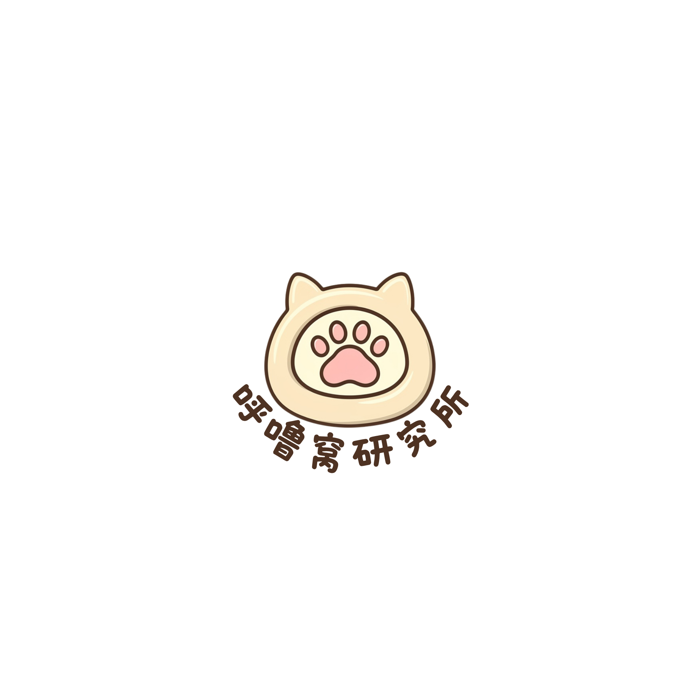

来看看你家宝宝的性格吧！
不用想太多，选最像你家宝宝的就好。
回答12个问题，选最像你家宝宝的就好。
通过 12 个小问题，看看你家宝宝平时更像哪一种类型。
从外向、直觉、情感、规律等不同角度，看看宝宝的性格倾向。
解锁属于你家宝宝的呼噜窝研究所角色和专属性格描述。
这些信息会帮助我们生成更贴近你家宝宝的测试结果。猫猫狗狗最适合参与测试，当然其他宝宝也可以试试看！
你家宝宝的性格是
看看 在每个维度上更偏向哪一边
Activities that align with 's personality type
Personalized training approaches for 's personality